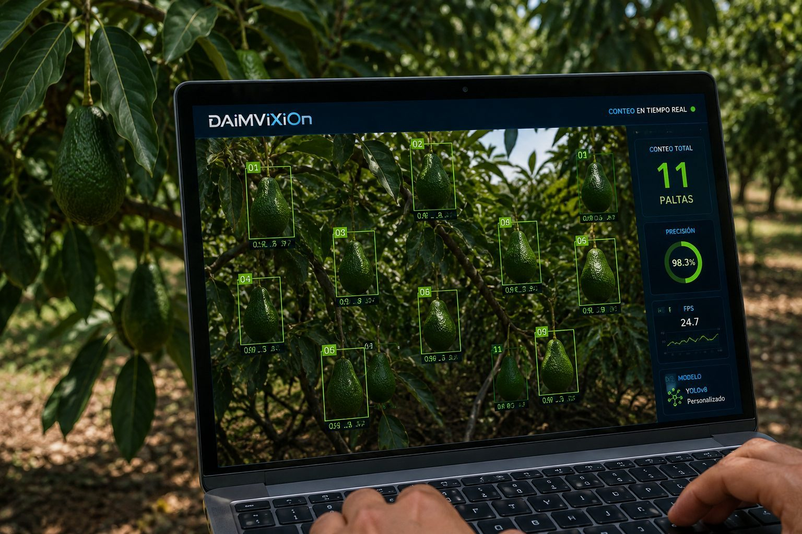
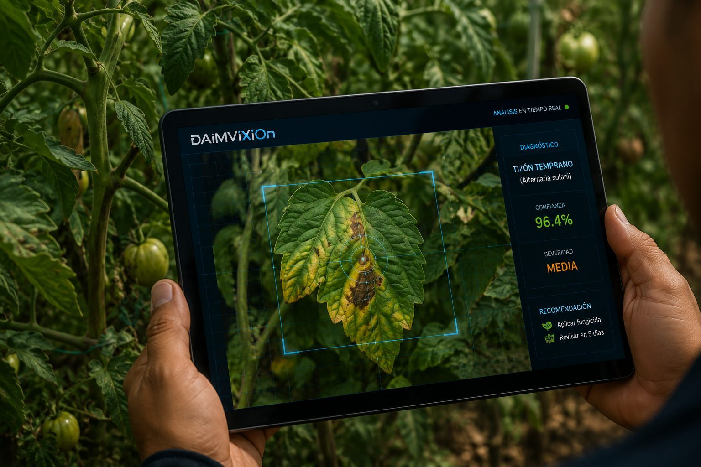
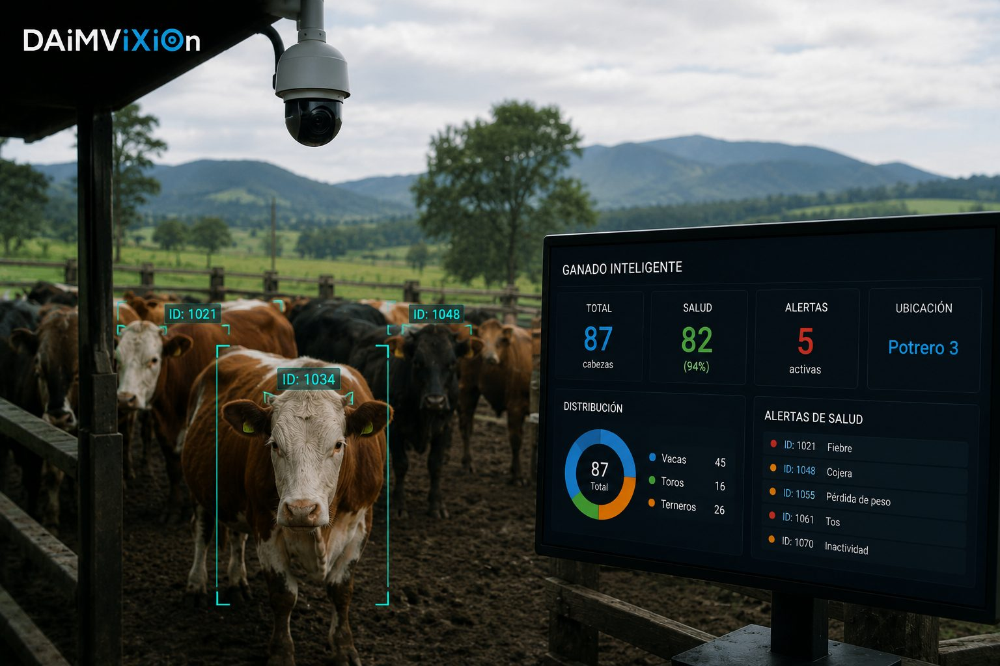
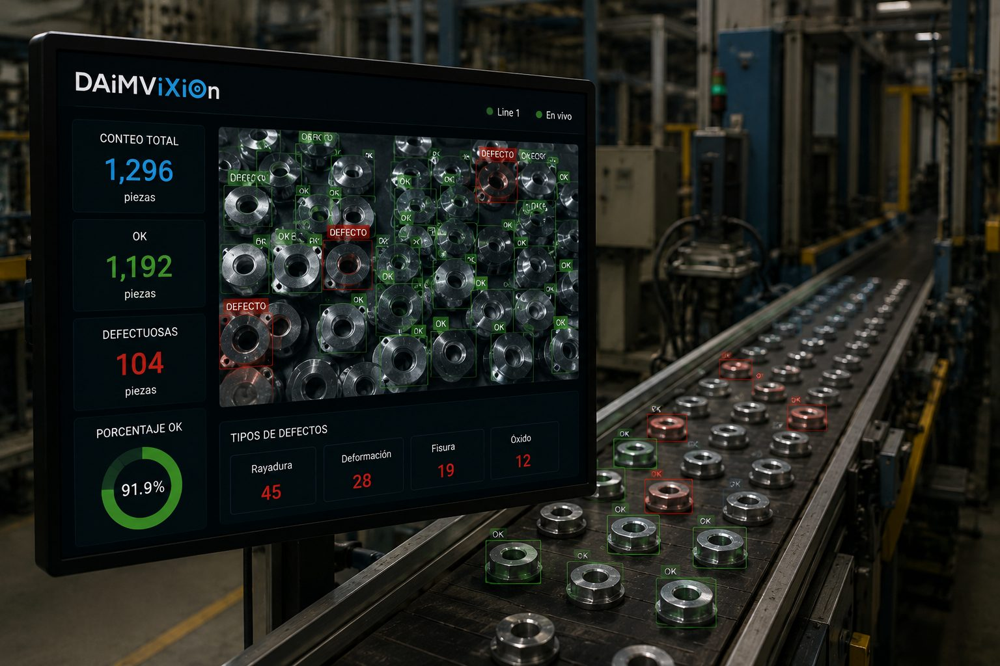
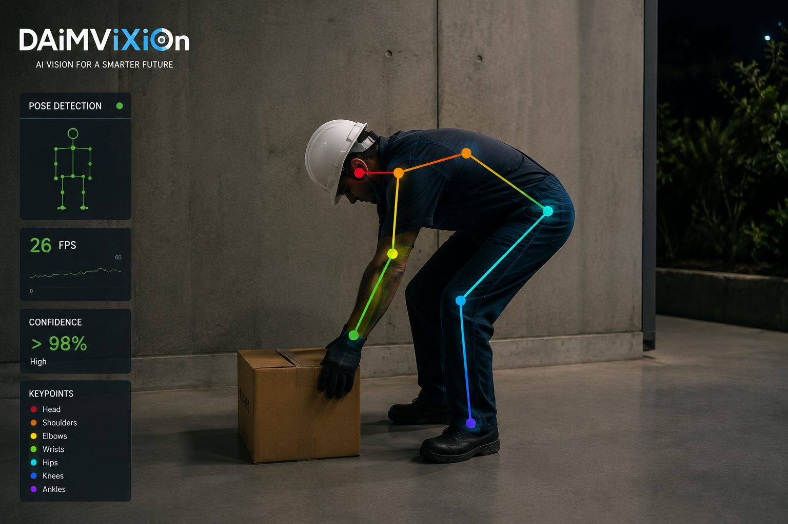

DEMO / CASOAGRICULTURA · VISIÓN
Conteo automático de frutos
Detección y conteo automático en imágenes y vídeo.
Casos visuales para entender qué problema resolvimos, qué desarrollamos y cómo puede evolucionar una idea hasta convertirse en un sistema.

DEMO / CASODetección y conteo automático en imágenes y vídeo.

DEMO / CASOIdentificación de patrones visuales y apoyo al diagnóstico.

DEMO / CASOSeguimiento y análisis visual para escenarios ganaderos.

DEMO / CASOControl de calidad mediante detección y clasificación.

DEMO / CASOSeguimiento de postura, movimiento y comportamiento.
Extracción, análisis y automatización de información documental.
Cuando se incorporen los enlaces oficiales de YouTube, cada caso podrá abrir su demostración directamente. No se han inventado URLs: se conectarán los enlaces reales que proporciones.
Se abrirá WhatsApp en una nueva ventana. No enviaremos ningún mensaje sin tu confirmación.